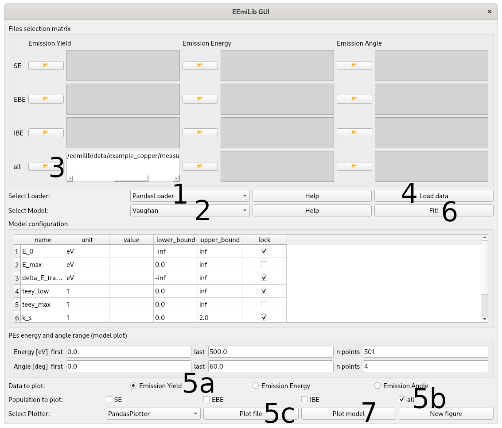
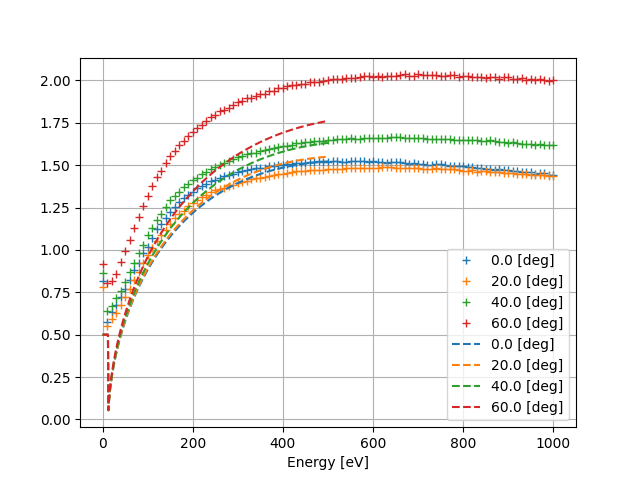

Quick start
Run the gui.py script located in src/eemilib/gui/.
If you installed EEmiLib using pip, you can also run the following command: eemilib-gui.
The following window should open.
{kind=link}

Select your data
Loader.
The choice of the loader depends on the format of your data file. By default, use
PandasLoader. It will work with the example data provided indata/example_copper.
Select your electron emission data
Model.
Changing the model updates the
Files selection matrix, according to the experimental files required by the model.Changing the model also updates the list of parameters in
Model configuration.
Select the file(s) to be loaded in the
Files selection matrix.Load the data by clicking “Load”.
Plot the loaded data to check that it is properly understood.
Select emission data type to plot: Emission Yield, Emission Energy Distribution or Emission Angle Distribution.
Select populations to plot: SEs, EBEs, IBEs, or all electrons.
Click
Plot file.
Click
Fit!to fit the model on the data.
It should update the values of the model parameters in
Model configuration.You can manually modify those values.
Plot the modelled data with
Plot model.
You can change the ranges of plotted energies and angles using
PEs energy and angle range (model plot).
{kind=link}
